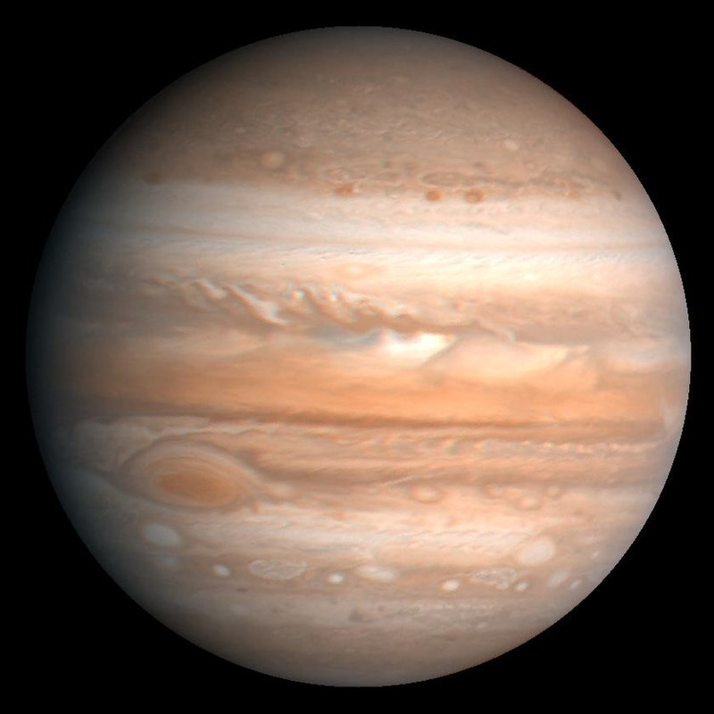

| Mercurio |
|
0,39 |
4878 |
0,06 |
0,39 |
0,24 |
58,6667 |
7º |
0 |
Trazas de hidrogeno y helio |
 |
| Venus |
|
0,95 |
12100 |
0,82 |
0,72 |
0,615 |
243 |
3,4º |
0 |
96 % CO2, 3 % nitrógeno,0.1 % agua |
 |
| Tierra |
|
1,0 |
12756 |
1,00 |
1,00 |
1,00 |
1,00 |
0º |
1 |
78 % nitrógeno, 21 % oxígeno, 1 % argón |
 |
| Marte |
|
0,53 |
6787 |
0,11 |
1,52 |
1,88 |
1,03 |
1,9º |
2 |
95 % CO2, 1.6 % argón, 3 % nitrógeno |
|
| Jupiter |
|
11,2 |
142984 |
318 |
5,2 |
11,86 |
0,414 |
1,3º |
79 |
90 % hidrógeno, 10 % helio, trazas de metano |
 |
| Saturno |
|
9,41 |
120536 |
95 |
9,54 |
29,46 |
0,426 |
2,5º |
82 |
96 % hidrógeno, 3 % helio, 0.5 % metano |
 |
| Urano |
|
3,98 |
51108 |
14,6 |
19,19 |
84,01 |
0,718 |
0,8º |
27 |
84 % hidrógeno, 14 % helio, 2 % metano |
 |
| Neptuno |
|
3,81 |
49538 |
17,2 |
30,06 |
164,79 |
0,6745 |
1,8º |
14 |
74 % hidrógeno, 25 % helio, 1 % metano |
 |